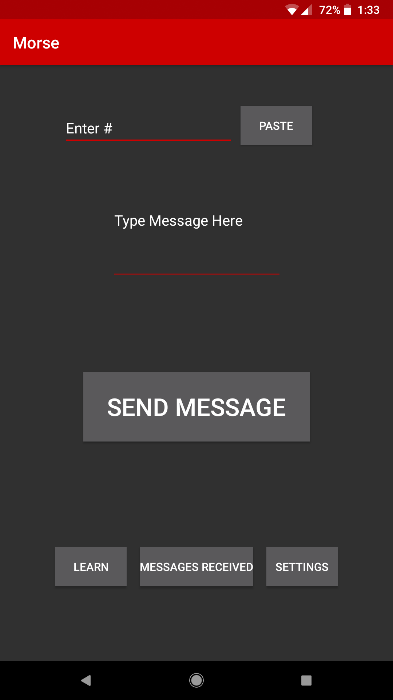
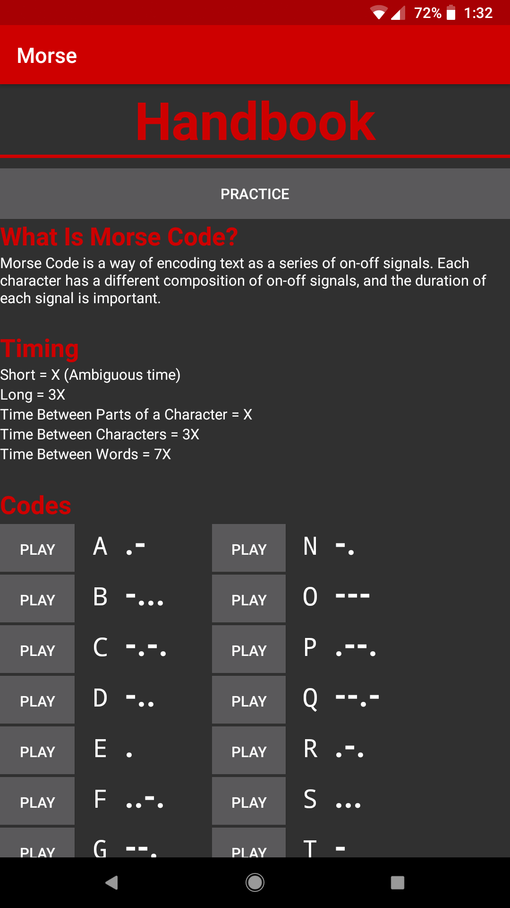
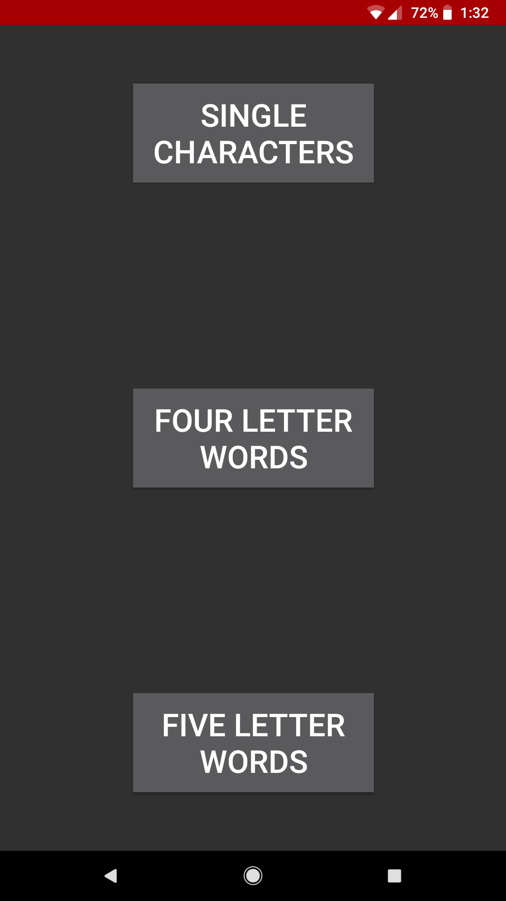
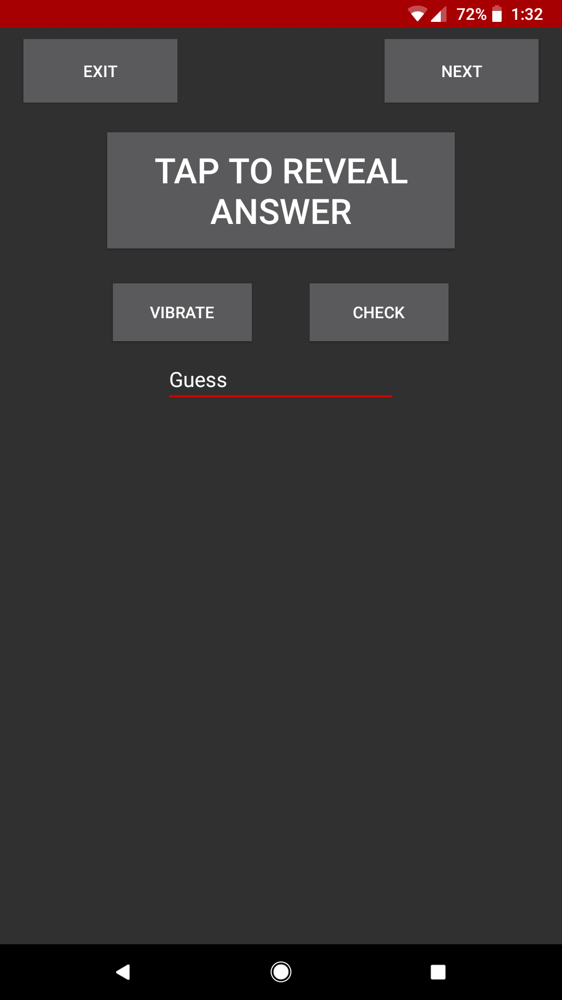

Categories
Getting Started
How does The Morse Project work? How to download The Morse Project? How to turn on or off Morse's vibrations? What if I don't know Morse code? How do I navigate through The Morse Project?How does The Morse Project work?
The Morse Project is a new app for Android, that allows you to learn, text, and recieve messages in Morse code. It is designed for ease of use and learning, so you don't even have to know Morse code. It can vibrate your messages, quiz you on you Morse abilities, and translate messages between Morse code and English.
How to download The Morse Project?
You can download the Morse Project for free on the google play store!
Click here to download the Morse Project!How to turn on or off Morse's vibrations?
The Morse code vibrations is the main aspect of the Morse Project, and we are keen on making this as little of a disturbance as possible. However, if you would like to stop the vibrations, you can do so in the settings app, by removing the permission to vibrate.
However, we would also recommend changing the vibrations to only vibrate the contact name or the first letter of the contact name, as this is much faster and easier for beginners.
What if I don't know Morse code?
Even if you don't know Morse code, you can easily learn it with The Morse Project! The handbook has each letter, so you can vibrate them in morse code and learn them all, and the quiz feature lets you get better at your Morse code skills!
How do I navigate through The Morse Project?
You can navigate through the Morse app through the buttons on each page marking where to go. From the main page, you can navigate to the learn page, the recently recieved messages page, and the settings page. From the learn page, you can choose how many letters you have to guess. The settings page has all the settings for customizing the Morse project to best fit you and your daily life!
   